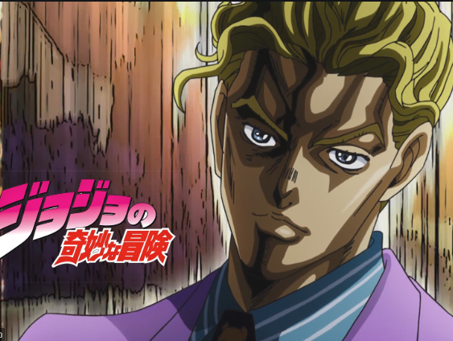

About me

My name is Kira Yoshikage. Age 33. My home is in the villa area in the northeastern part of Kao-cho. I'm not married. Work is a company employee of “Kameyu Chain Store” and returns home by 8:00 pm at the latest every day I don't smoke. Sake is just enough. At 11pm, I always sleep for 8 hours per floor. Drink warm milk before going to bed. When you loosen your body for about 20 minutes and then touch the floor. I almost sleep until morning. Like a baby, keep your eyes open in the morning without leaving fatigue and stress. It was said that there was no abnormality in the medical examination.